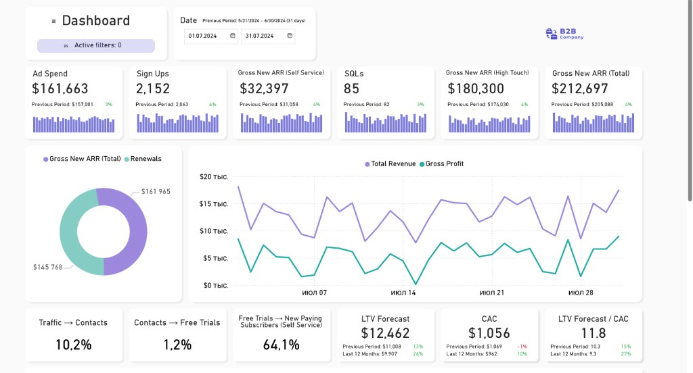
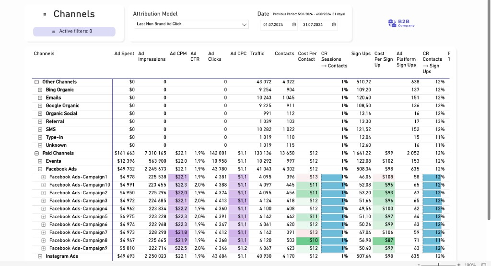

Этап 1 · Channel Performance RF
Срок: 1 неделя · РФ · DataLens
1. Цель этапа
За 1 неделю собрать в Yandex DataLens первый рабочий дашборд по каналам РФ:
- от трат / охватов / кликов,
- до воронки Лид → MQL → SQL → Продажа по данным AmoCRM.
Гео этого этапа: только РФ. В фокусе: Яндекс.Директ, VK Ads и агрегированные каналы (SEO, SMM, Direct, Seeding).
2. Дашборд «Обзор маркетинга РФ»
Структура верхней части
Аналог первого скрина: один экран с основными цифрами и трендами.
Расходы, ₽
1 600 000
Пред. период: 1 570 000 · +2%
Лиды
1 050
Пред. период: 980 · +7%
Продажи
82
Пред. период: 75 · +9%
MQL
320
Конверсия Лид → MQL: 30%
SQL
150
MQL → SQL: 47%
Выручка, ₽
8.2M
CAC: 19 500 ₽
Нижние показатели
- Конверсия Трафик → Лиды, %
- Конверсии Лиды → MQL → SQL → Продажи, %
- CAC, ₽ и выручка на лид, ₽
Референс‑макет
Сводная страница с карточками и графиками (аналог примера)

Референс: верхняя страница — KPI‑карточки, donut‑диаграмма по выручке и график выручка/расходы.
3. Дашборд «Каналы и кампании РФ»
Иерархическая таблица
Строки:
- Уровень 1 — группы каналов: платные, органика, прямые, прочие;
- Уровень 2 — отдельные каналы (Яндекс.Директ, VK, SEO, SMM и т.д.);
- Уровень 3 — кампании внутри каждого канала.
Основные колонки (подписи для пользователя):
| Показатель | Комментарий |
|---|---|
| Канал / Кампания | Название канала или кампании |
| Расходы, ₽ | Сумма расходов по периоду |
| Показы, Клики, CPM, CPC | Классические медиа‑метрики |
| Трафик (сеансы) | Сеансы по UTM из Метрики |
| Контакты / Лиды | Количество лидов в AmoCRM |
| Стоимость контакта, ₽ | Расходы / Лиды |
| CR Сеансы → Лиды | Лиды / Трафик, % |
| MQL, SQL, Продажи | Количество по стадиям воронки |
| Выручка, ₽; CAC; ROAS | Финансовые показатели по каналу/кампании |
В DataLens таблица должна поддерживать сворачивание/раскрытие уровней и цветовую индикацию по стоимостям и конверсиям.
Референс полной таблицы

Референс: таблица Channels — группы каналов, каналы и кампании с расходами, трафиком, конверсиями и стоимостью контакта.
4. Источники данных и соединения (сжатое резюме)
4.1. Источники
- AmoCRM: таблица
leads_rf(Лид, MQL, SQL, Продажа, выручка, UTM, страна = РФ). - Рекламные кабинеты РФ: таблица
ad_costs_rf(дата, канал, кампания, показы, клики, расходы). - Яндекс.Метрика по домену
fitbase.io: таблицаweb_rf(дата, UTM, визиты, пользователи). - Справочник каналов
dim_channel: маппинг UTM → нормализованный канал.
4.2. Связки
- Лиды → Канал: по
utm_source / utm_medium / utm_campaignчерезdim_channel. - Расходы → Канал: по полю
channelвad_costs_rf(тот же справочник). - Трафик → Канал: по UTM‑меткам в
web_rfчерезdim_channel.
На этапе 1 допустим приближённый матчинг кампаний по названию, главное — корректное разнесение по каналам РФ.
5. Приоритеты и объём этапа
- Срок: 1 неделя.
- Гео: только РФ.
- Каналы (обязательно): Яндекс.Директ, VK Ads.
- Статусы лида: Лид, MQL, SQL, Продажа (Won).
- Разбивка по стадиям воронки и отдельным воронкам («Теплые», «Вебинары») — последующие этапы, не входят в этот спринт.